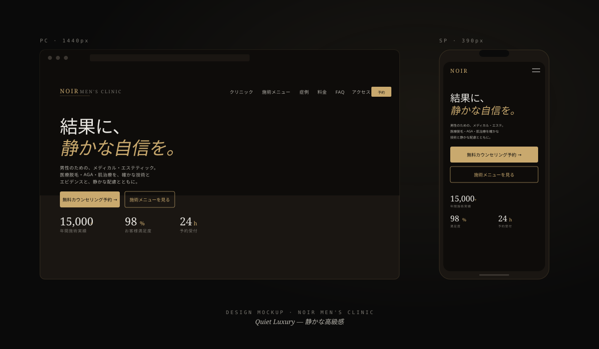
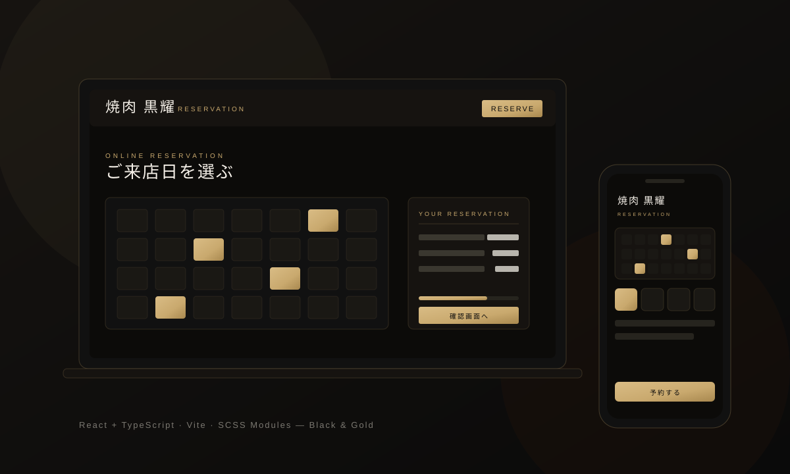

Project 01
Brand Site焼肉 黒耀
恵比寿の高級焼肉店ブランドサイト
「実店舗の格を、画面の中でも保つ」を制作方針として、漆黒と古金色のミニマル配色、和洋融合タイポ、空席カレンダー予約UIまで実装。接待・記念日利用層に向けた、編集デザインのブランドサイト。
Portfolio · Open to Work — 2026 Spring
野崎大翔（Hiroto Nozaki）のポートフォリオです。
架空企業4社の案件で、企画・情報設計・UI設計・実装までを担当しました。
見た目だけではなく、ユーザーが迷わず使える構造を意識しています。
Selected Works · Practice / Fictional Client Works
01 — About
野崎大翔（Hiroto Nozaki）と申します。デジタルハリウッドSTUDIOで学びながら、株式会社アストラザスタジオでインターンとして実務に携わっています。WordPressの更新・修正・ページ追加・デザイン反映を通じて、「作って終わり」ではない運用され続ける設計の重要性を学んでいる途中です。
インターンに入る前は「自分が綺麗だと思うサイト」を作ることに夢中でした。でも実務に触れて、
更新する人がいること、
2年後も読めるコードであること、
予算と時間に収まること——
その制約の中で初めて「良いサイト」が成立するのだと知りました。今は企画書から運用想定まで言語化してから手を動かしています。
苦労したのは「焼肉 黒耀」の画像最適化でした。2MB級のJPEGを並べて「動けばOK」にしてしまい、Lighthouseで現実を突きつけられました。以降、次の作品では前作の弱点を潰すサイクルで取り組んでいます。
01
インターン先でのWordPress更新・修正対応を通じて、「半年後の自分や他の人が触っても破綻しない構造」を意識するようになりました。命名・コメント・分割の判断軸が変わりました。
02
ペルソナ・KPI・ユーザージャーニー・競合分析まで言語化してからコードに進む手順を、全4作品で意識しています。「なぜこの設計にしたか」を説明できる状態を作るのが習慣です。
03
前作の弱点（画像最適化／インラインstyle／パッチ残存）を次作で潰すサイクルを4作品で回しました。「動くからOK」で止めず、何が悪かったかを言葉にする習慣を続けています。
Currently Learning WordPress テーマ開発 / アクセシビリティ / パフォーマンス最適化 / Sass
02 — Works
各作品には Live Site／ソースコード／企画書（PDF）の3点を用意しています。 企画書では、ターゲット・課題設定・KPI・情報設計・デザイン意図まで言語化しています。 さらに「焼肉 黒耀」は React / TypeScript で再構築した発展版（Project 05）も収録しています。
Project 01
Brand Site恵比寿の高級焼肉店ブランドサイト
「実店舗の格を、画面の中でも保つ」を制作方針として、漆黒と古金色のミニマル配色、和洋融合タイポ、空席カレンダー予約UIまで実装。接待・記念日利用層に向けた、編集デザインのブランドサイト。
Project 02
Recruiting LP架空IT企業の採用ランディングページ
「応募数・応募者の質・エントリー完了率」を改善するLPとして設計。FLOCSS命名、Glassmorphism、Formspree実送信フォーム（honeypot + 30秒クールダウン + aria-live通知）を実装。Apple × SaaS × Glass UI のビジュアル言語。
Project 03
Corporate Site架空IT企業のコーポレートサイト
AI開発・Web制作・DX支援を行う架空IT企業のコーポレートサイト。全7ページ構成で、Apple風ミニマルレイアウト、近未来感のあるガラスUI、青〜紫グラデーションのブランド言語。フレームワーク非使用、IntersectionObserver で軽量に実装。
Project 04
Clinic / WordPressプレミアム男性医療クリニックの公式サイト

「Quiet Luxury — 静かな高級感」をコンセプトに、黒×ゴールドの編集デザインで医療機関の信頼性と上質感を両立。WordPressテーマ化を前提に template-parts 分割で設計し、クライアントが自社で運用できる構成に。
Project 05
Brand Site · React Edition「焼肉 黒耀」を React / TypeScript で再構築した予約体験（発展実装）

Vanilla JS 版で作った予約サイトを、保守性・再利用性・チーム開発を見据えて React + TypeScript で再構築。状態に応じて UI が自動更新される宣言的な設計に切り替え、手動 DOM 操作のバグを根本から減らしました。黒×ゴールドの世界観は崩さず、設計の「なぜ」を説明できる状態を意識しています。
03 — Skills
「触ったことがある」ではなく、実案件を意識して制作しているものを基準に整理しています。学習中のものは明記しています。
SK / 01
SK / 02
clamp() による可変余白SK / 03
SK / 04
aria-expanded / aria-controls）prefers-reduced-motion 対応SK / 05
requestAnimationFrame スロットリングSK / 06
loading="lazy"）preconnectSK / 07
SK / 08
SK / 09
functions.php / テンプレート階層）04 — Contact
採用ご担当者様・制作会社の皆様、ご連絡をお待ちしております。
企画書・実装物の補足、面談のご依頼、技術的なご質問など、
どんな内容でもお気軽にどうぞ。
※ 履歴書PDFは、住所・電話番号・生年月日の一部を非公開としています。
詳細は応募媒体経由・または面接時にお伝えいたします。